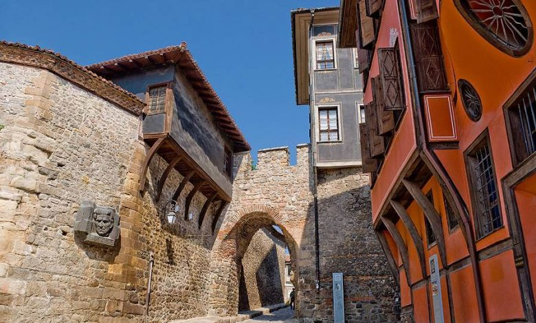

Пловдив
Древен и вечен
География
История
Храмове
Старият град Пловдив
Забележителности
Интересни факти
Развлечения
Старинен Пловдив
Архитектурно-исторически резерват „Старинен Пловдив“ (известен още като Стария град) е разположен върху три от хълмовете на Пловдив –Небет тепе, Джамбаз тепе и Таксим тепе, известни още като Трихълмието, и заема площ от 35 km². Той е формиран вследствие на непрекъснатия живот в града в продължение на векове (от праисторията до наши дни) и съчетава в себе си духа и архитектурата от Античността, Средновековието и българското възраждане. Старият град е една от най-популярните туристически дестинации в Пловдив.
Един от най-ценните паметници на богатото археологическо наследство на древния град. Античният театър е най-голямо постижение в областта на реставрацията на паметниците от античността в България.
Построен е през 90-те години на I в., по времето на римския император Домициан. Театърът е разположен в естествената седловина между Джамбаз тепе и Таксим тепе. Театронът е разчленен на 2 ранга от по 14 реда седалки, отделени с хоризонтална пътека (диазома). Вероятно театърът е побирал около 3500 зрители. От южната страна на полукръглата орхестра се издига триетажната сценична постройка, украсена с фризове, корнизи и статуи.
Театърът е проучен археологически, консервиран и реставриран под ръководството на Л. Ботушарова и В. Коларова в периода 1968 – 1984 г. Тук се провеждат редица културни прояви, сред които Верди фестивал и Международният фолклорен фестивал.
Йоана Иванова, Ивайла Гаджакова, Ивайла Невенова 2024